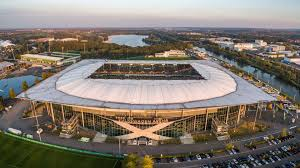
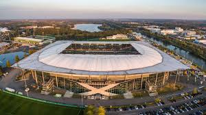

VfL Wolfsburg is a professional football club based in Wolfsburg, Germany. Founded in 1945, the club has a rich history and is known for its strong performances in the Bundesliga, the top tier of German football. VfL Wolfsburg has won several domestic titles, including the Bundesliga championship in the 2008-2009 season and the DFB-Pokal (German Cup) in 2015. The club is also recognized for its youth development programs and has produced several talented players who have gone on to achieve success at both club and international levels. VfL Wolfsburg plays its home matches at the Volkswagen Arena, which has a seating capacity of over 30,000 spectators. The club's colors are green and white, and its nickname is "Die Wölfe" (The Wolves).
 

VfL Wolfsburg plays its home matches at the Volkswagen Arena, located in Wolfsburg, Germany. The stadium has a seating capacity of approximately 30,000 spectators and is known for its modern facilities and vibrant atmosphere. The Volkswagen Arena features a distinctive design with green and white colors, reflecting the club's identity. The stadium has hosted numerous memorable matches since its opening in 2002, including domestic league games and European competitions. It is equipped with state-of-the-art amenities, including VIP areas, hospitality suites, and fan zones, providing an enjoyable experience for supporters. The Volkswagen Arena has become a fortress for VfL Wolfsburg, with passionate fans creating an electrifying atmosphere that inspires the team on matchdays.
Over the years, VfL Wolfsburg has been home to several notable players who have made significant contributions to the club's success. Some of these players include Edin Džeko, who was instrumental in the club's Bundesliga title win in 2009, and Kevin De Bruyne, known for his exceptional playmaking abilities. The club has also nurtured young talents who have gone on to achieve success at both club and international levels.
VfL Wolfsburg has achieved notable success in German football, including winning the Bundesliga championship in the 2008-2009 season and the DFB-Pokal (German Cup) in 2015. The club has also made significant strides in European competitions, reaching the quarter-finals of the UEFA Champions League in the 2015-2016 season. VfL Wolfsburg continues to be a competitive force in both domestic and international football.